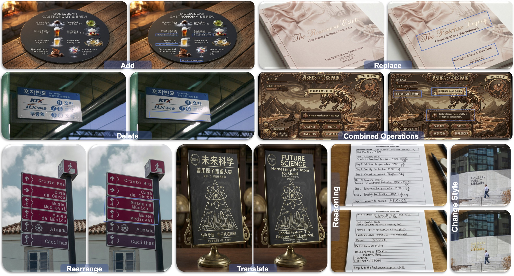
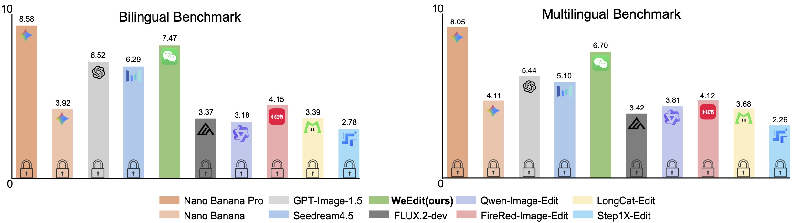
Instruction-based image editing aims to modify specific content within existing images according to user-provided instructions while preserving non-target regions. Beyond traditional object- and style-centric manipulation, text-centric image editing focuses on modifying, translating, or rearranging textual elements embedded within images. However, existing leading models often struggle to execute complex text editing precisely, frequently producing blurry or hallucinated characters. We attribute these failures primarily to the lack of specialized training paradigms tailored for text-centric editing, as well as the absence of large-scale datasets and standardized benchmarks necessary for a closed-loop training and evaluation system. To address these limitations, we present WeEdit, a systematic solution encompassing a scalable data construction pipeline, two benchmarks, and a tailored two-stage training strategy. Specifically, we propose a novel HTML-based automatic editing pipeline, which generates 330K training pairs covering diverse editing operations and 15 languages, accompanied by standardized bilingual and multilingual benchmarks for comprehensive evaluation. On the algorithmic side, we employ glyph-guided supervised fine-tuning to inject explicit spatial and content priors, followed by a multi-objective reinforcement learning stage to align generation with instruction adherence, text clarity, and background preservation. Extensive experiments demonstrate that WeEdit outperforms previous open-source models by a clear margin across diverse editing operations.
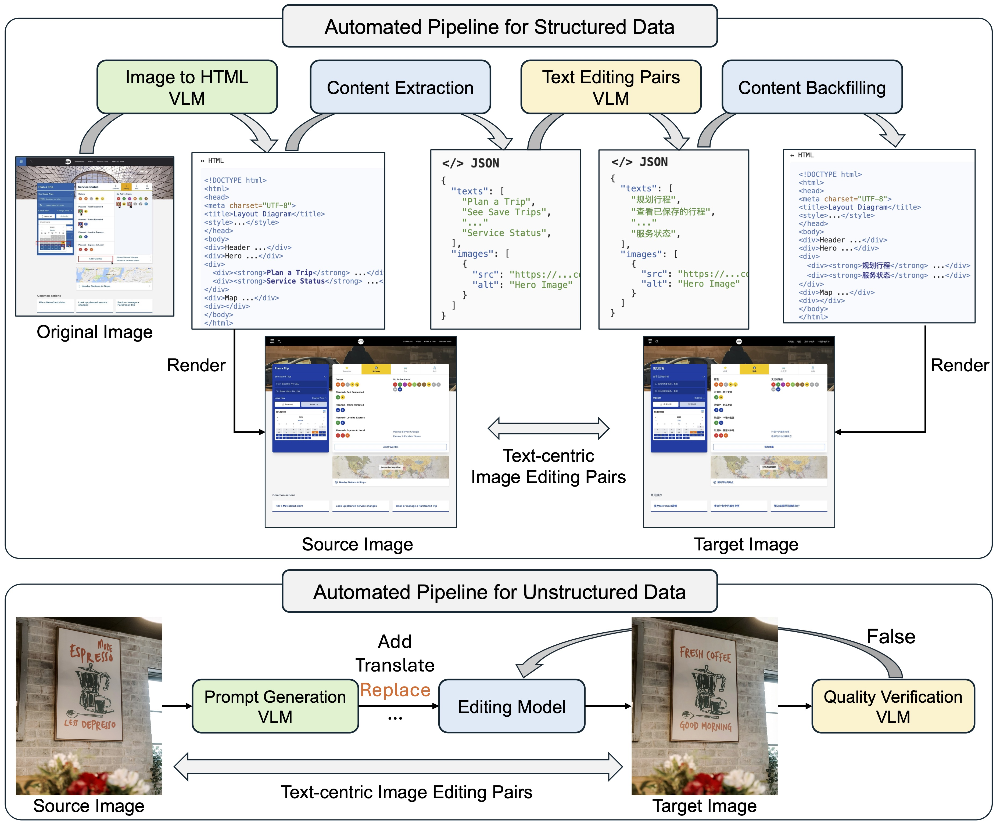
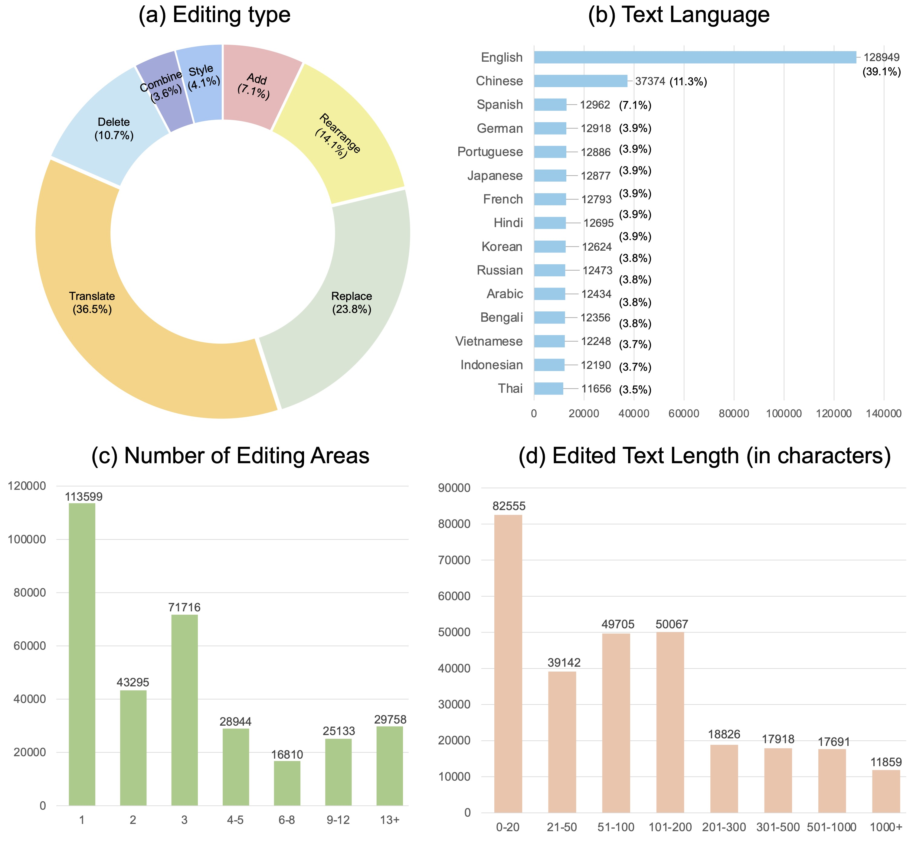
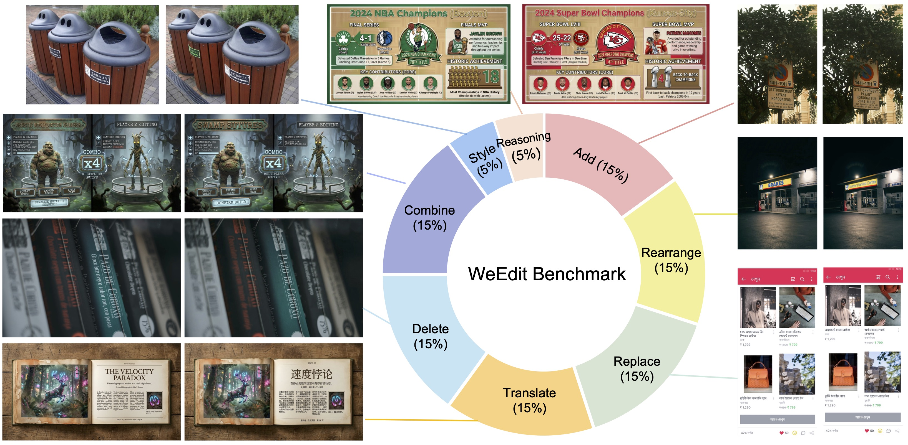
Overview of the WeEdit Benchmark. It covers 8 editing operations (Add, Replace, Delete, Rearrange, Translate, Change Style, Combined, and Reasoning), with both a bilingual (Chinese–English) and a multilingual (15 languages) version, each containing 2,000 test cases. Models are evaluated on Instruction Adherence, Text Clarity, and Background Preservation.
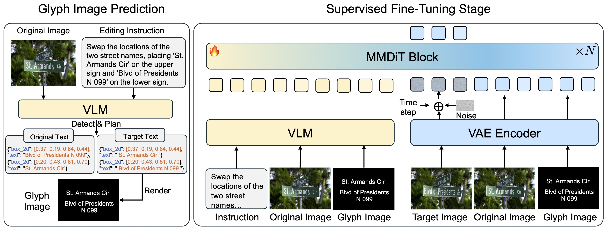
A VLM first detects text regions in the source image and plans the target text content and layout according to the editing instruction. The planned targets are rendered as a glyph image on a blank canvas, providing explicit spatial and content priors. The source image, instruction, and glyph image are then jointly fed into a LoRA-adapted MM-DiT to generate the edited image.
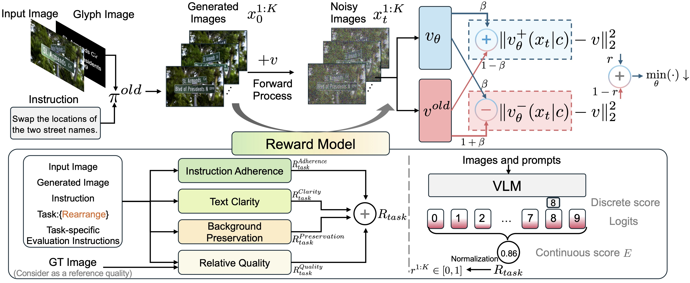
The model generates multiple candidate images per input, which are scored by four VLM-based reward models along complementary dimensions: instruction adherence, text clarity, background preservation, and relative quality against a reference. Each reward is computed via logit-weighted continuous scoring for smooth gradients. The composite reward drives a contrastive policy optimization that pulls the model toward high-reward edits and pushes it away from low-reward ones.
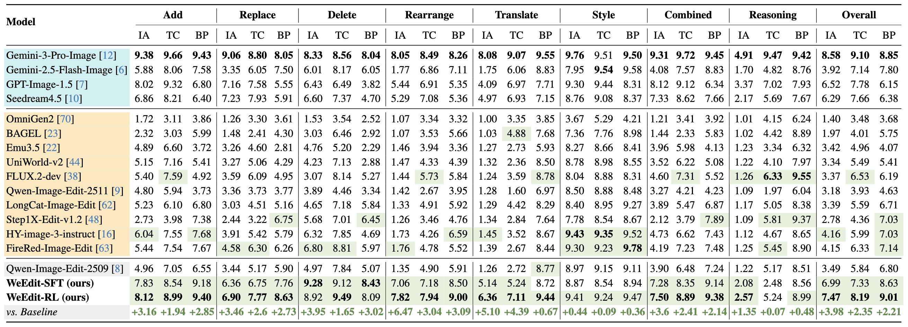
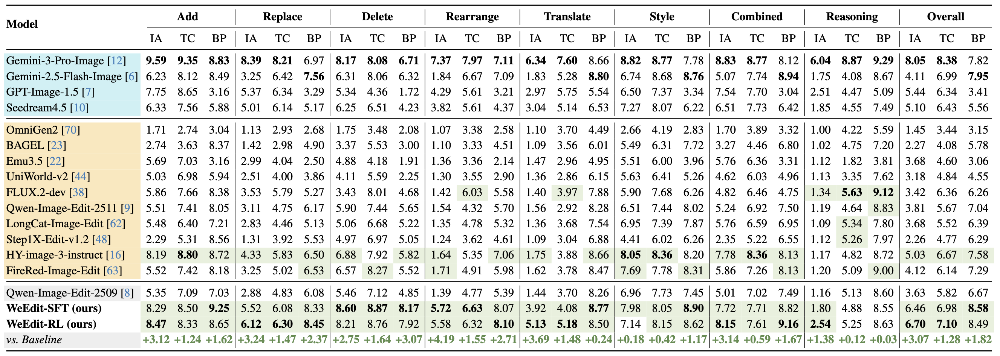
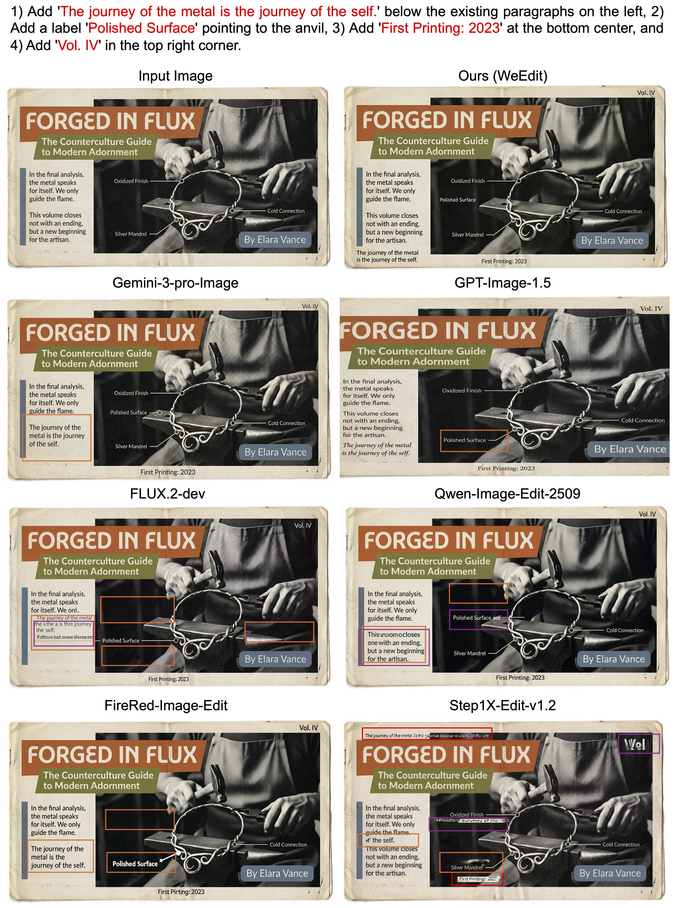
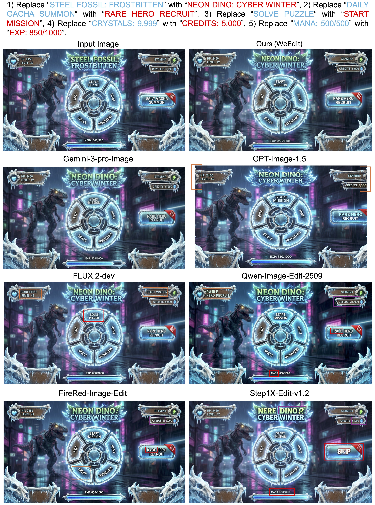
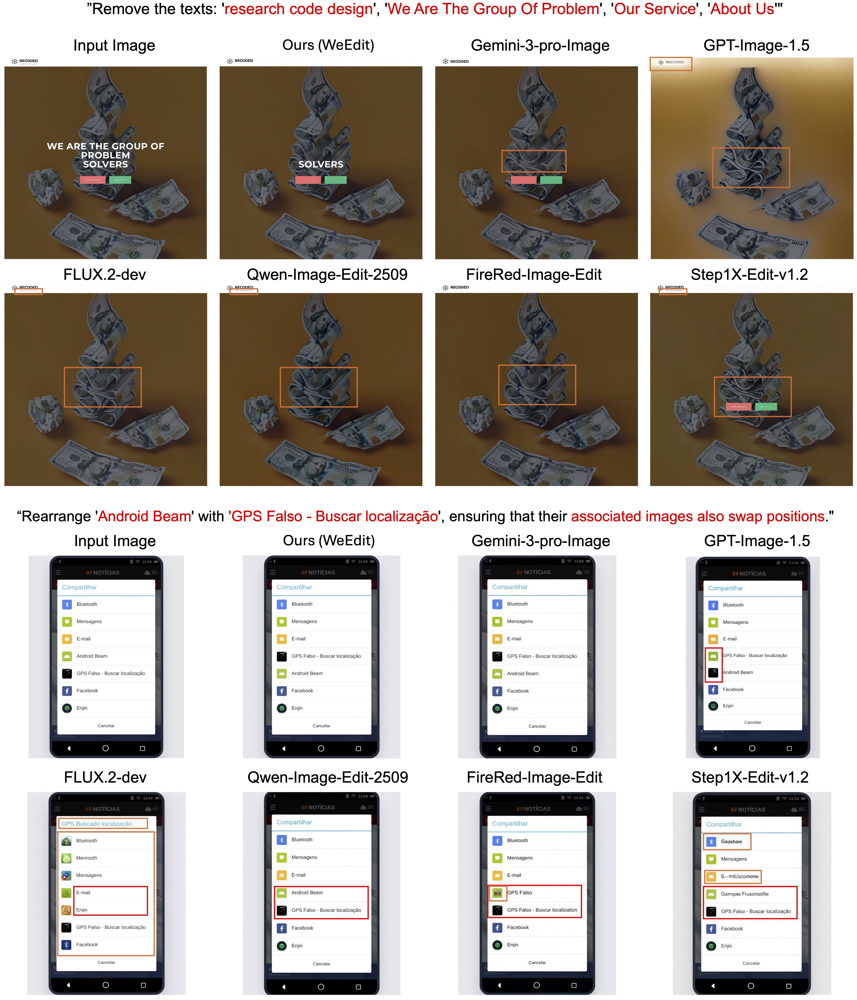
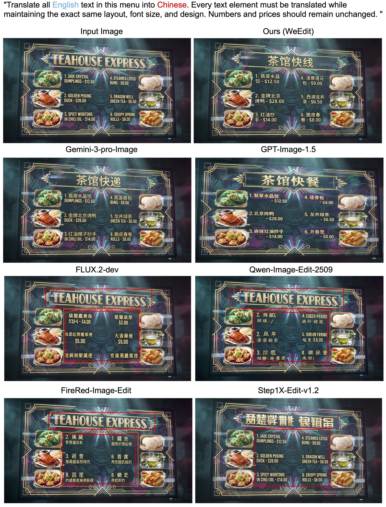
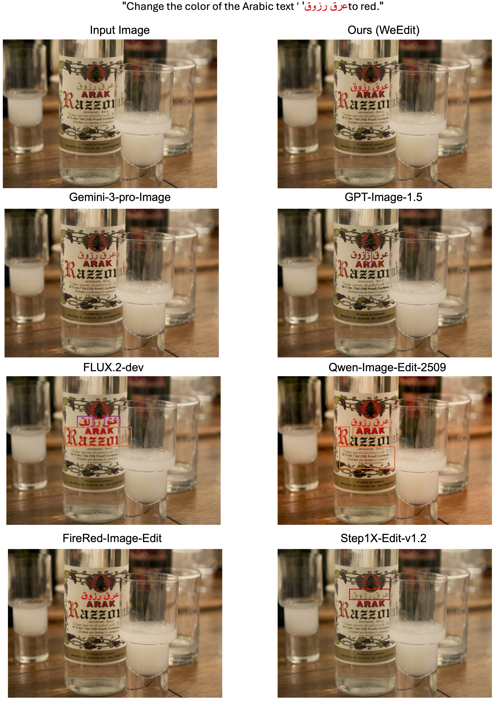
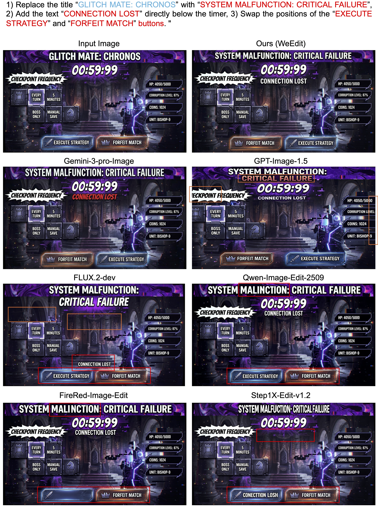
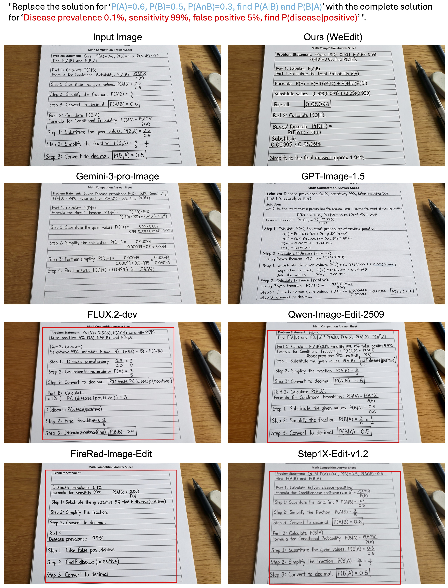
@article{zhang2026weedit,
title={WeEdit: A Dataset, Benchmark and Glyph-Guided Framework for Text-centric Image Editing},
author={Zhang, Hui and Liu, Juntao and Liu, Zongkai and Niu, Liqiang and Meng, Fandong and Wu, Zuxuan and Jiang, Yu-Gang},
journal={arXiv preprint arXiv:2603.11593},
year={2026}
}